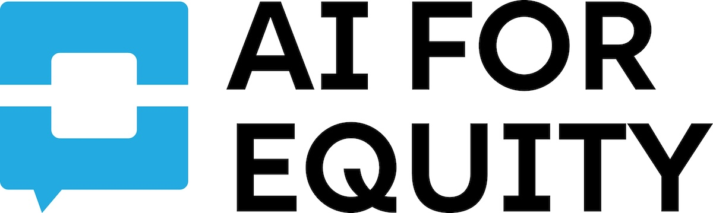

Curated Resource CollectionDiscover curated teaching resources to help students understand artificial intelligence, its capabilities, limitations, and societal impact.
Implementing AI literacy curriculum requires thoughtful planning beyond just selecting resources. Use this guide to think through key decisions that will set your implementation up for success.
One of your first decisions is whether you need a curriculum where lessons build on each other (sequential) or standalone lessons that can be used independently (plug-and-play).
Best when you have dedicated time (e.g., a unit, course, or weekly slot) and want students to develop deep, cumulative understanding. Concepts build on prior knowledge.
Best when integrating AI into existing courses, using for advisory/homeroom, or when you need flexibility. Each lesson stands alone and can be taught in any order.
Before rolling out AI literacy curriculum school-wide or district-wide, identify a pilot group to learn from. This allows you to test, iterate, and build internal expertise before broader implementation.
Piloting helps you identify what works in your specific context, surface unexpected challenges, build teacher confidence and expertise, and create internal champions who can support colleagues during scale-up.
Consider piloting with:
Think carefully about where AI literacy instruction will happen in your school structure. The right home for this curriculum depends on your goals, existing structures, and resources.
Ensures all students get exposure. Works well with short, standalone lessons. May have limited time and competing priorities.
Allows for deeper exploration and sequential curriculum. Reaches self-selected students who may already be interested.
Connects AI to subject-area content. Requires teacher buy-in and training. Can feel more relevant and applied.
Natural fit for technical AI content. May not reach all students. Can go deeper on how AI actually works.
A critical question: Is AI literacy curriculum adding to what you already teach, or is it replacing something? This decision has implications for teacher workload, scheduling, and stakeholder buy-in.
AI content is added on top of existing curriculum. May require finding additional time. Teachers maintain their current courses while adding AI elements.
AI content replaces existing curriculum or course offerings. Requires deciding what to remove. May face resistance if beloved content is cut.
Rather than purely adding or replacing, consider how AI literacy can be woven into existing learning objectives. For example, teaching about AI bias during a unit on persuasive writing, or exploring AI-generated art in a visual arts class.
Even the best curriculum will fall flat without prepared teachers. Consider how you'll support educators who may be learning alongside their students.
Many of the resources in this hub include teacher guides, videos, and professional development materials. Look for resources that support teacher learning, not just student-facing content.
AI literacy should be accessible to all students. Consider barriers that might prevent equitable access and plan proactively to address them.